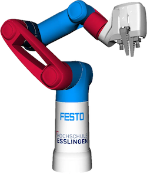

Cobot Documentation¶
This page serves as a reference for the integration of a pneumatic Cobot (provided by Festo SE & Co. KG) into MoveIt2 and ROS2 Control: https://github.com/robgineer/cobot.

In oder to get a deep insight into this project and to use the Cobot for your custom tasks, follow the steps below.
- Check out the Quickstart Guide to get the Cobot running in Simulation or on its real hardware.
- Run some demos using the C++ / Python API or the MoveIt Task Constructor from the demo package.
- Get an overview of the MoveIt2 / ROS2 Control Configuration and the launch files.
- Get familiar with the Cobot Model and delve deeper into model creation in the Cobot Modelling Jupyter Notebook.
- Understand the custom Cobot control setup: Cobot Trajectory Controller / Cobot Hardware Interface.
- Learn how to evaluate your own planner config based on our planner evaluation.
- Calibrate your custom camera using the hand eye calibration implementation.